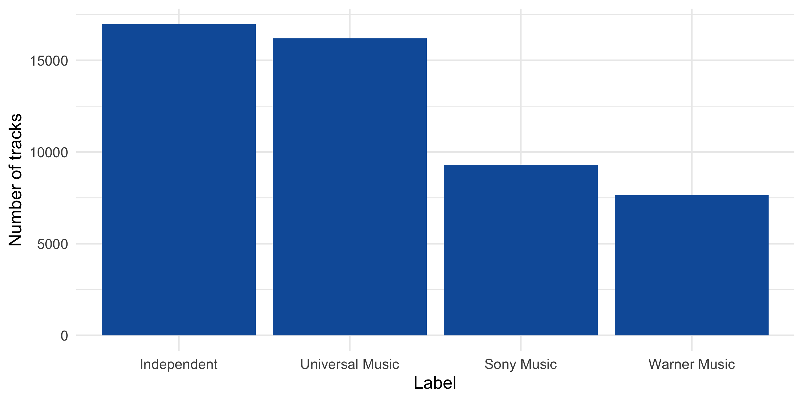
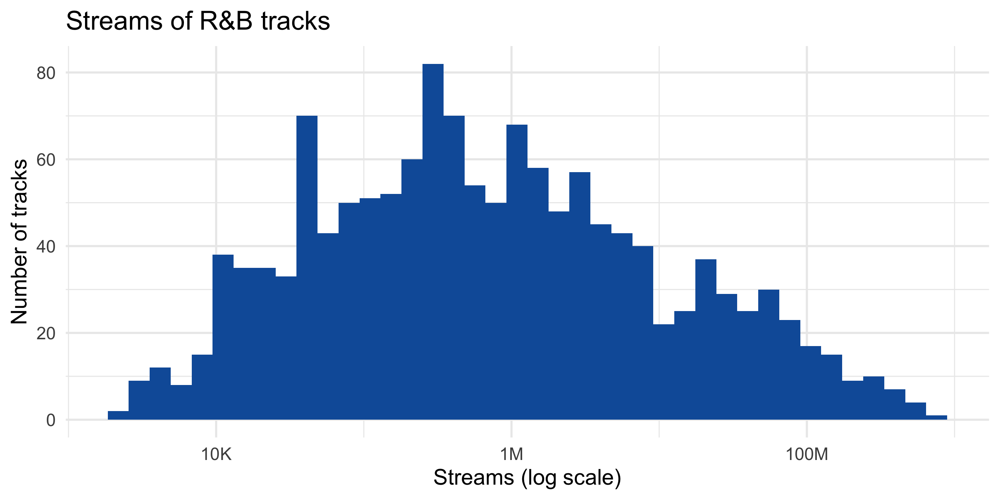
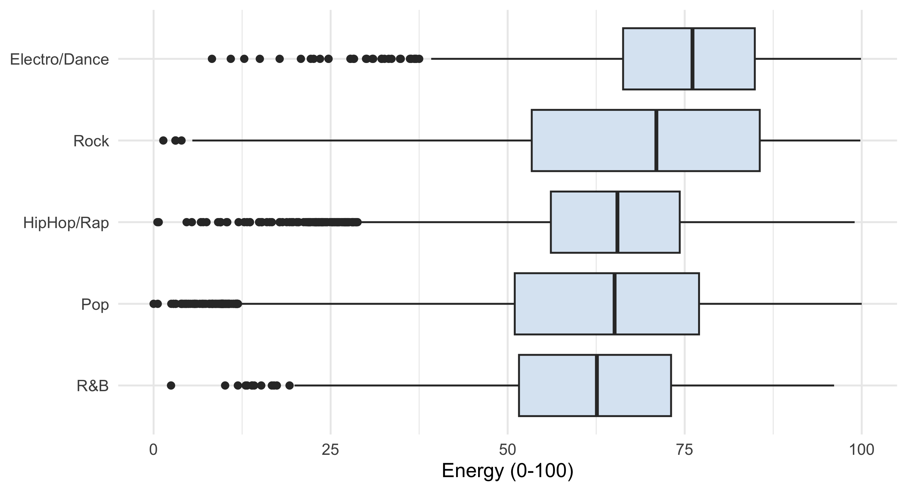
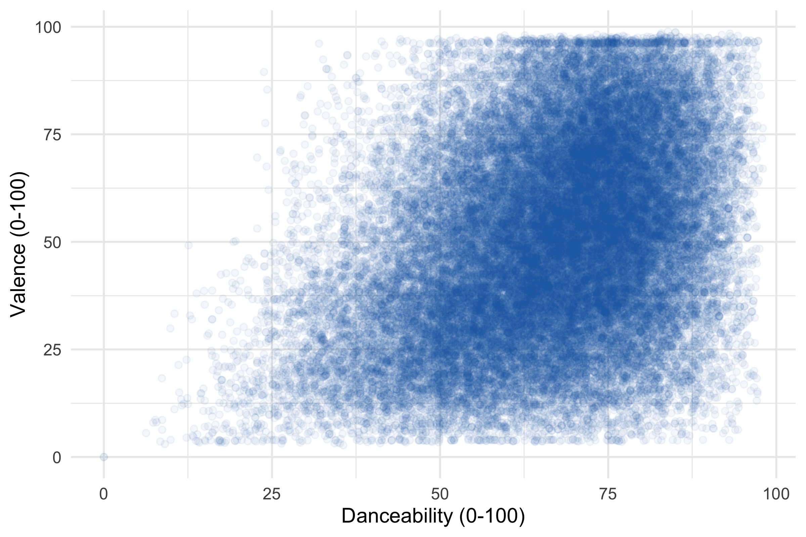

library(tidyverse)
music_raw <- read_csv2("https://raw.githubusercontent.com/wu-rds/MA2026/main/data/music_data_fin.csv")
# Personal version of the data, based on the student ID
student_id <- "12345678"
set.seed(as.numeric(gsub("\\D", "", student_id)))
focus_genre <- sample(c("Pop", "HipHop/Rap", "Rock", "Electro/Dance", "R&B"), 1)
music_data <- slice_sample(music_raw, prop = 0.75)Assignment 1: Data handling & description
This page shows the tasks of Assignment 1 with one possible solution and the grading hints we used. Click on a blue box to expand it.
The solution was computed for the example student ID 12345678. Since every student worked with a personal random sample of the data and a personal focus genre, your numbers differ from the ones shown here — what matters is the approach, the code, and the interpretation. Other correct solutions (e.g., different code, different chart styling) received full points.
Points: 7 for the report, 3 for the in-class debrief (10 in total). Unless stated otherwise, half of the points of a sub-task were given if the approach was right but the execution contained an error (e.g., a wrong variable or a missing sorting step).
| Task | Topic | Points |
|---|---|---|
| 1 | Variables and levels of measurement | 1.0 |
| 2 | Data handling | 1.5 |
| 3 | Not trusting your data too early | 1.0 |
| 4 | Summarizing data | 1.5 |
| 5 | Visualizing data | 1.5 |
| 6 | From description to insight | 0.5 |
| Report | 7 | |
| — | In-class debrief (3 questions) | 3 |
| Total | 10 |
Setup: the personal data set
Example data set for student ID 12345678: 50,097 tracks; focus genre: R&B.
Task 1: Variables and levels of measurement (1 point)
1a) (0.75 points) Convert the following variables in music_data to appropriate R types: genre and label (factors); explicit and top10 (factors with meaningful labels instead of 0/1); artist_id (an identifier, not a number); expert_rating (an ordered factor with the categories poor < fair < good < excellent < masterpiece). Use glimpse() to show that the conversion worked.
NoteSolution and grading: 1a
music_data <- music_data |>
mutate(
genre = as.factor(genre),
label = as.factor(label),
explicit = factor(explicit, levels = c(0, 1), labels = c("not explicit", "explicit")),
top10 = factor(top10, levels = c(0, 1), labels = c("no", "yes")),
artist_id = as.character(artist_id),
expert_rating = factor(expert_rating,
levels = c("poor", "fair", "good", "excellent", "masterpiece"),
ordered = TRUE)
)
glimpse(select(music_data, genre, label, explicit, top10, artist_id, expert_rating, release_date))Rows: 50,097
Columns: 7
$ genre <fct> HipHop/Rap, Rock, Rock, Pop, Electro/Dance, Electro/Danc…
$ label <fct> Sony Music, Independent, Universal Music, Universal Musi…
$ explicit <fct> not explicit, explicit, not explicit, explicit, explicit…
$ top10 <fct> no, no, no, no, no, no, no, no, no, yes, no, no, no, no,…
$ artist_id <chr> "853511", "4584", "4312", "111452", "14806", "5211", "20…
$ expert_rating <ord> good, poor, excellent, good, good, poor, fair, fair, fai…
$ release_date <date> 2018-03-15, 2020-08-21, 2018-11-30, 2019-06-06, 2017-01…Grading: expert_rating as an ordered factor with the levels in the correct order (0.25) — without ordered = TRUE or with alphabetical levels: 0 for this part. The other five variables (0.5): all correct 0.5; one or two missing or wrong 0.25; more 0. release_date is already read as a date by read_csv2(); no conversion needed.
1b) (0.25 points) Complete the table: what is the level of measurement of each variable, and which summary statistic is appropriate?
| Variable | Level of measurement | Appropriate summary |
|---|---|---|
genre |
||
expert_rating |
||
| release year | ||
streams |
NoteSolution and grading: 1b
| Variable | Level of measurement | Appropriate summary |
|---|---|---|
genre |
nominal | frequencies / mode |
expert_rating |
ordinal | frequencies, median |
| release year | interval | mean, standard deviation (or median, range) |
streams |
ratio | median (skewed!), quantiles; mean and SD possible |
Grading: 0.25 points if at least three of the four rows are correct.
Task 2: Data handling (1.5 points)
2a) (0.75 points) Show the ten most-streamed tracks of your focus genre. Create a new variable streams_mio (streams in millions), sort the tracks in descending order, and show only the columns artistName, trackName, and streams_mio.
NoteSolution and grading: 2a
music_data |>
filter(genre == focus_genre) |>
mutate(streams_mio = streams / 1e6) |>
arrange(desc(streams_mio)) |>
select(artistName, trackName, streams_mio) |>
head(10)# A tibble: 10 × 3
artistName trackName streams_mio
<chr> <chr> <dbl>
1 KAROL G feat. Nicki Minaj Tusa 757.
2 Daddy Yankee feat. Snow Con Calma 642.
3 Doja Cat Say So 507.
4 Jhay Cortez feat. J Balvin feat. Bad Bunny No Me Conoce - Remix 487.
5 J Balvin feat. Bad Bunny LA CANCIÓN 470.
6 Khalid feat. Normani Love Lies (with Norma… 449.
7 The Weeknd feat. Daft Punk Starboy 439.
8 The Weeknd feat. Daft Punk I Feel It Coming 421.
9 Chris Brown feat. Drake No Guidance (feat. Dr… 367.
10 Childish Gambino Redbone 361.Grading: filter on the focus genre (0.25); new variable streams_mio and correct sorting (0.25); only the three requested columns and ten rows (0.25).
2b) (0.75 points) For each label, compute the number of tracks, the total number of streams, the median number of streams, and the share of tracks that reached the top 10. Sort the result by the total number of streams (descending).
NoteSolution and grading: 2b
music_data |>
group_by(label) |>
summarise(
n_tracks = n(),
total_streams = sum(streams),
median_streams = median(streams),
share_top10 = mean(top10 == "yes")
) |>
arrange(desc(total_streams))# A tibble: 4 × 5
label n_tracks total_streams median_streams share_top10
<fct> <int> <dbl> <dbl> <dbl>
1 Universal Music 16198 148725731060 438106. 0.114
2 Sony Music 9302 81456746471 349509 0.110
3 Independent 16966 72408555218 245342 0.0806
4 Warner Music 7631 66836894115 350713 0.102 Grading: number of tracks and total streams per label (0.25); median and share of top-10 hits (0.25); sorting by total streams (0.25). The share of top-10 hits can also be computed via count() and division — full points if correct.
Task 3: Not trusting your data too early (1 point)
3a) (0.25 points) Check the data for missing values. Then compute, for youtube_views, tiktok_counts, and shazam_counts, the share of tracks with a value of zero. What do you conclude?
NoteSolution and grading: 3a
sum(is.na(music_data))[1] 0music_data |>
summarise(
zero_youtube = mean(youtube_views == 0),
zero_tiktok = mean(tiktok_counts == 0),
zero_shazam = mean(shazam_counts == 0)
)# A tibble: 1 × 3
zero_youtube zero_tiktok zero_shazam
<dbl> <dbl> <dbl>
1 0.579 0.539 0.437The data contain no missing values (NA), but a large share of zeros: about 58% of the tracks have zero YouTube views, 54% zero TikTok uses, and 44% zero Shazam searches. For charting tracks, most of these zeros are implausible and most likely mean “no data available” (disguised missing values).
Grading: 0.25 for the shares of zeros and their interpretation as likely missing information (checking for NA is expected but not graded separately). Shares without interpretation: 0.1.
3b) (0.5 points) Check the data for implausible values: release dates after the end of 2021 (when the data were collected), a tempo of zero, and extremely short or long songs (choose and state reasonable thresholds). Report how many tracks are affected. Then create a logical flag variable plausible that is TRUE for all tracks without such problems — do not delete any rows.
NoteSolution and grading: 3b
music_data |>
summarise(
n_future_release = sum(release_date > as.Date("2021-12-31")),
n_tempo_zero = sum(tempo == 0),
n_very_short = sum(song_length < 0.5),
n_very_long = sum(song_length > 15)
)# A tibble: 1 × 4
n_future_release n_tempo_zero n_very_short n_very_long
<int> <int> <int> <int>
1 1 2 1 10music_data <- music_data |>
mutate(plausible = release_date <= as.Date("2021-12-31") & tempo > 0 &
song_length >= 0.5 & song_length <= 15)
count(music_data, plausible)# A tibble: 2 × 2
plausible n
<lgl> <int>
1 FALSE 13
2 TRUE 50084Grading: identifying the impossible release dates and at least one other implausible value such as a tempo of 0 or extreme song lengths (0.25; since each data set is a random sample, a few students may have no future release dates — then a correct statement that there are none is fine); creating a flag variable instead of deleting rows (0.25). The thresholds for song length are a judgment call — any reasonable, stated threshold is fine.
3c) (0.25 points) Is the ISRC (isrc) a unique identifier in your data, i.e., does each row represent a different recording? Show how you checked it.
NoteSolution and grading: 3c
music_data |> summarise(n_rows = n(), n_distinct_isrc = n_distinct(isrc))# A tibble: 1 × 2
n_rows n_distinct_isrc
<int> <int>
1 50097 44349No: there are 5,748 more rows than distinct ISRCs, so one row is not always one unique recording.
Grading: 0.25 for the comparison of rows and distinct ISRCs and the correct conclusion.
Task 4: Summarizing data (1.5 points)
4a) (0.75 points) Compare the number of streams of the tracks in your focus genre with all other tracks: compute the number of tracks, mean, median, standard deviation, and interquartile range for both groups. Which statistic describes the “typical” track better — the mean or the median? Explain why, and report the typical number of streams in your focus genre in your answer using inline code.
NoteSolution and grading: 4a
music_data |>
mutate(group = if_else(genre == focus_genre, focus_genre, "All other genres")) |>
group_by(group) |>
summarise(
n = n(),
mean = mean(streams),
median = median(streams),
sd = sd(streams),
iqr = IQR(streams)
)# A tibble: 2 × 6
group n mean median sd iqr
<chr> <int> <dbl> <dbl> <dbl> <dbl>
1 All other genres 48715 7125386. 332255 40150361. 2091064.
2 R&B 1382 16146697. 597690. 56880419. 4384260.The typical R&B track has 597,690 streams (median). The mean is far above the median in both groups: the distribution of streams is strongly right-skewed, and a few mega-hits pull the mean up. The median therefore describes the typical track better.
Grading: correct table with location and dispersion measures for both groups (0.25); the median named as the appropriate statistic with the reason — skewed distribution / outliers (0.25); the median of the focus genre reported in the text with inline code (0.25).
4b) (0.5 points) Describe the distribution of the expert ratings within your focus genre: absolute and relative frequencies of each category, and the median category.
NoteSolution and grading: 4b
focus_ratings <- music_data |>
filter(genre == focus_genre) |>
count(expert_rating) |>
mutate(share = n / sum(n))
focus_ratings# A tibble: 5 × 3
expert_rating n share
<ord> <int> <dbl>
1 poor 103 0.0745
2 fair 263 0.190
3 good 479 0.347
4 excellent 495 0.358
5 masterpiece 42 0.0304focus_tracks <- filter(music_data, genre == focus_genre)
sort(focus_tracks$expert_rating)[ceiling(nrow(focus_tracks) / 2)] # median category[1] good
Levels: poor < fair < good < excellent < masterpieceGrading: absolute and relative frequencies (0.25); median category (0.25). Computing a mean of the ratings (e.g., after converting them to numbers 1–5): no points for this part — the variable is ordinal.
4c) (0.25 points) Compute the share of explicit tracks for each genre.
NoteSolution and grading: 4c
music_data |>
group_by(genre) |>
summarise(n = n(), share_explicit = mean(explicit == "explicit")) |>
arrange(desc(share_explicit))# A tibble: 11 × 3
genre n share_explicit
<fct> <int> <dbl>
1 Electro/Dance 2012 0.343
2 German Folk 391 0.292
3 Classics/Jazz 59 0.203
4 Rock 3156 0.170
5 Pop 22612 0.155
6 Soundtrack 253 0.126
7 Reggae 88 0.0909
8 R&B 1382 0.0803
9 other 3893 0.0786
10 HipHop/Rap 15870 0.0512
11 Country 381 0.0210Grading: 0.25 for the correct conditional shares (sorting is not required).
Task 5: Visualizing data (1.5 points)
For all charts, meaningful axis titles are required (with units where applicable). Missing or default axis titles (e.g., fct_infreq(label)) cost 0.1 points per chart.
5a) (0.25 points) Create a bar chart of the number of tracks per label, with the bars sorted by frequency.
NoteSolution and grading: 5a
ggplot(music_data, aes(x = fct_infreq(label))) +
geom_bar(fill = "#0f5da8") +
labs(x = "Label", y = "Number of tracks") +
theme_minimal()
Grading: 0.25 for a bar chart sorted by frequency; unsorted: 0.1.
5b) (0.5 points) Create a histogram of the number of streams of the tracks in your focus genre. Choose a scale on which the shape of the distribution is visible, and label it accordingly.
NoteSolution and grading: 5b
music_data |>
filter(genre == focus_genre) |>
ggplot(aes(x = streams)) +
geom_histogram(bins = 40, fill = "#0f5da8") +
scale_x_log10(labels = scales::label_number(scale_cut = scales::cut_short_scale())) +
labs(x = "Streams (log scale)", y = "Number of tracks",
title = paste("Streams of", focus_genre, "tracks")) +
theme_minimal()
Grading: histogram of the focus genre (0.25); log scale and labeled as such in the axis title (0.25).
5c) (0.25 points) Create a chart that compares the distribution of energy across the five genres Pop, HipHop/Rap, Rock, Electro/Dance, and R&B.
NoteSolution and grading: 5c
music_data |>
filter(genre %in% c("Pop", "HipHop/Rap", "Rock", "Electro/Dance", "R&B")) |>
ggplot(aes(x = fct_reorder(genre, energy, .fun = median), y = energy)) +
geom_boxplot(fill = "#dbe7f3") +
coord_flip() +
labs(x = NULL, y = "Energy (0-100)") +
theme_minimal()
Grading: boxplots (or another suitable chart for categorical × continuous, e.g., violin plots) for the five genres (0.25). Bar chart of mean energy only: 0.1 (hides the distribution).
5d) (0.5 points) Create a scatter plot of danceability (x-axis) and valence (y-axis) for all tracks. Take care that the plot remains readable despite the large number of points. Describe the relationship in one sentence.
NoteSolution and grading: 5d
ggplot(music_data, aes(x = danceability, y = valence)) +
geom_point(alpha = 0.05, color = "#0f5da8") +
labs(x = "Danceability (0-100)", y = "Valence (0-100)") +
theme_minimal()
cor(music_data$danceability, music_data$valence)[1] 0.351Danceability and valence are positively associated (correlation ≈ 0.35): more danceable tracks tend to sound more positive — but the cloud is wide, so the association is moderate.
Grading: scatter plot with transparency or another measure against overplotting (0.25); one sentence of correct, descriptive interpretation (0.25).
Task 6: From description to insight (0.5 points)
The head of A&R asks: “In your focus genre, do tracks with explicit lyrics perform worse?” Compare the median number of streams of explicit and non-explicit tracks in your focus genre. Then write two to three sentences for the head of A&R: state what the data show (with numbers), and explain what the comparison can and cannot tell us.
NoteSolution and grading: Task 6
music_data |>
filter(genre == focus_genre) |>
group_by(explicit) |>
summarise(n = n(), median_streams = median(streams))# A tibble: 2 × 3
explicit n median_streams
<fct> <int> <dbl>
1 not explicit 1271 609275
2 explicit 111 453664Example answer: “Among the R&B tracks in our chart data, tracks with explicit lyrics have a lower median number of streams than tracks without explicit lyrics (about 454,000 vs. 609,000). This comparison is descriptive: the tracks differ in more than their lyrics — for example in label or artist popularity — and the data contain only tracks that made the charts.”
Grading: correct numbers in a descriptive statement without causal language (0.25); naming at least one plausible confounder (label, artist popularity, …) or the selection into the charts (0.25). Causal wording (“explicit lyrics reduce streams”): no points for the first part.
In-class debrief (3 points)
The debrief at the start of the session after the deadline (page 1 of the combined sheet with the Chapter 3 quiz) consisted of three short questions about each student’s own results:
- Your focus genre (1 point): which focus genre did your personal data contain?
- Danceability and valence (1 point): what was the relationship in your scatter plot — positive, negative, or no relationship?
- Explicit lyrics (0.5 + 0.5 points): (a) in your focus genre, which tracks had more streams (median) — explicit or non-explicit tracks? (b) What can you conclude from this comparison?
NoteExpected answers
- The focus genre of the student’s own data version (it depends on the student ID).
- Positive — in every data version (correlation about 0.35, see Task 5d).
- In most data versions, non-explicit tracks have the higher median number of streams; in a few versions, the explicit tracks of the focus genre come out ahead. The answer was graded against each student’s own data. (b) The two groups differ in their streams, but the comparison cannot show that the lyrics cause this difference: it is a descriptive comparison of tracks that differ in more than their lyrics (e.g., label, artist popularity, target audience), and the data contain only tracks that made the charts (see Task 6).